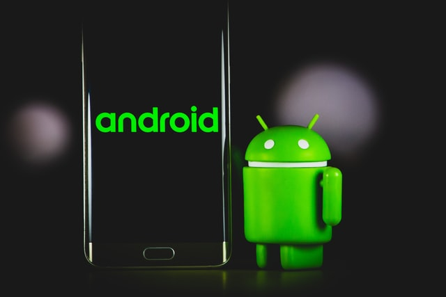

What are Operating Systems?
Operating system (OS) are a type of software made using a programming language typically they are coded in a language called C.
Operating is a software that is crucial to the function of a computer, the operating system is used in nearly every action of the computer, it is the gateway
between the virtual and the physical world, it is how your computer knows to display the letter A when you click the key on the keyboard(well essentially).
It communicates with the hardware and without it no program would be able to run, every smartphone, tablet and computer has an operating system.
Operating systems provide a Graphical User Interface (GUI) which is a fancy way of saying that it makes your iPhone have a cooler look than an Android device (or whichever you prefer, OS is was controls the look of the device, the lock and home screen, and basic apps like settings).
tl;dr
(too long; didn't read)
Operating systems communicate with the physical pieces of the device to allow you fulfill ur hearts desires through the screen.
